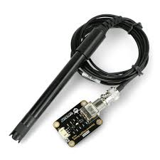
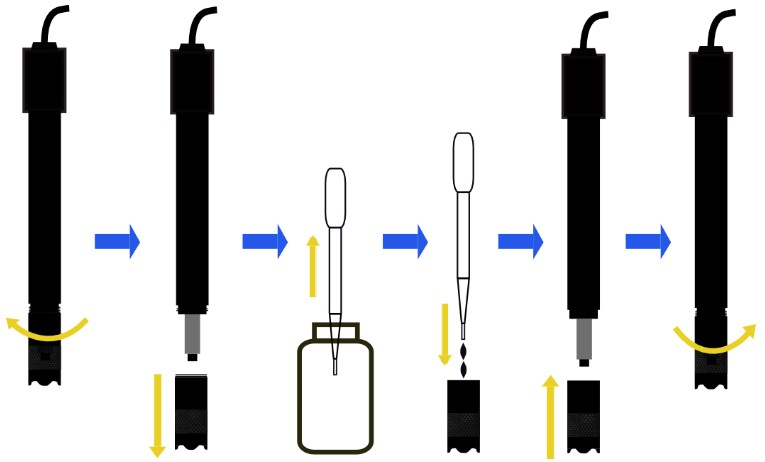

SENSOR DE OXIGENO DISUELTO
Para la adquisición de datos se empleara el sensor de oxígeno disuelto SEN0237-A, el cual funciona mediante un principio electroquímico para detectar la concentración de oxígeno presente en el agua.Este módulo incluye una sonda sumergible y una placa de acondicionamiento de señal que permite obtener una salida analógica proporcional al nivel de oxígeno medido.
PROCESO DE CALIBRACIÓN
Para garantizar la precisión de las mediciones, el sensor requiere un proceso de calibración previo. Generalmente, se realiza una calibración en aire saturado o utilizando soluciones patrón conocidas. Este procedimiento permite ajustar la relación entre el voltaje de salida y la concentración real de oxígeno disuelto. Una calibración adecuada es fundamental, ya que factores como la temperatura, la presión atmosférica y el envejecimiento de la membrana pueden influir en la medición.
MICROCONTROLADOR DEL SISTEMA
El sistema de adquisición de datos emplea la placa Arduino Uno como unidad principal de procesamiento. Esta plataforma es ampliamente utilizada en aplicaciones de monitoreo debido a su facilidad de programación, estabilidad y compatibilidad con sensores de salida analógica. El Arduino Uno opera a 5 V y cuenta con 6 entradas analógicas, lo que permite la conexión directa del sensor de oxígeno disuelto. Además, incorpora un convertidor analógico-digital (ADC) de 10 bits, capaz de transformar señales analógicas en valores digitales entre 0 y 1023. La placa puede alimentarse mediante conexión USB o a través de una fuente externa de 7-12 V, lo que facilita su implementación en sistemas de monitoreo continuo.